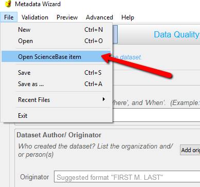
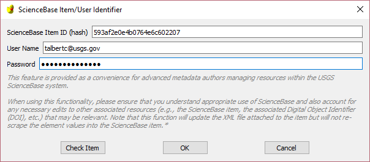

Editing existing FGDC metadata record on ScienceBase¶
(New in release 2.0.7)
Editing the existing FGDC metadata file on ScienceBase Item can be done directly by entering a ScienceBase item ID as well as a user name and password.
This feature is provided as a convenience for advanced metadata authors managing resources within the USGS ScienceBase system.
When using this functionality, please ensure that you understand appropriate use of ScienceBase and also account for any necessary edits to other associated resources (e.g., the ScienceBase item, the associated Digital Object Identifier (DOI), etc.) that may be relevant. Note that this function will update the XML file attached to the item but will not re-scrape the element values into the ScienceBase item.*
- In the File menu select ‘Open ScienceBase item’:

- In the box that pops up, enter the ScienceBase item ID, username and password:

Click the ‘Check Item’ button to see if the item exists, has a FGDC record attached, he username has write access to the item, and password is correct.
When you click the ‘OK’ button, these checks will also be run. If the item is editable it will be auto-downloaded to a temporary location and opened in the MetadataWizard. Every time you save in the MetadataWizard the updated xml file will be replaced on the ScienceBase item. From a user perspective saving changes in the Wizard changes the metadata on the ScienceBase item.